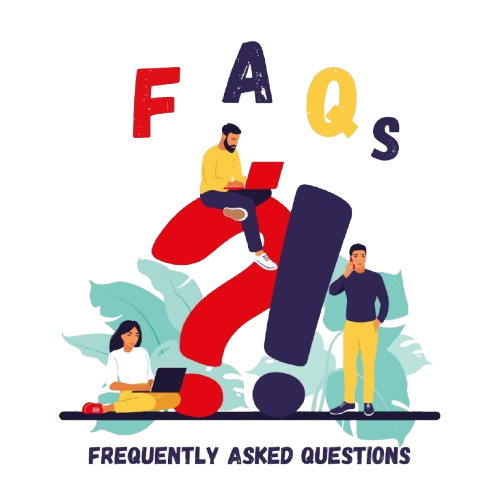

Image to Text Converter
Extract Text from Images with OCR
Extract text from images with just a click using our free tool.
Drag & Drop your image here
or click to browse files
Extract text from images with just a click using our free tool.
or click to browse files
Experience powerful OCR technology with these amazing features
Our OCR image to text extractor is completely free to use. There are no costs associated with signing up and using our tool.
The OCR engine used by our tool is smart and intelligent. It can accurately extract text from the provided images while making little to no errors.
There are three different ways in which you can input your files into our tool. You can either upload the file from your local storage, drag and drop it from a source, or use the URL feature to fetch the file directly from the internet.
Our tool provides a quick functionality. You can get your images converted to text in a matter of seconds. You don't have to go through long waits and delays with our tool.
The interface of our tool is very simple and straightforward. Everyone can use it without any difficulty.
You can use our online OCR image to text converter on all platforms, whether it is your mobile, computer, tablet, etc. Since our tool is browser-based, all you require is a working internet browser and a working internet connection.
An online OCR image to text translator is an online tool that helps you extract text from an image or a PDF file. The text extracted from the image or PDF is presented in the form of digital copyable/editable text.
The technology behind an image-to-text tool is called OCR. It stands for Optical Character Recognition, and it essentially analyzes the text present inside the images before comparing them to Unicode characters stored in a database. By analyzing and comparing the text inside the image/PDF file with Unicode characters, OCR is able to convert it to digital text.
Here are some purposes for which you can use our tool:
Students and teachers can use our tool for many different purposes, such as:
Since our tool is completely free, it is especially suitable for students.
Office workers and data entry experts have to deal with large amounts of data (much of which is present in the form of images or physical documents). Using an image to text converter can help them easily organize, compile, and store the data by changing it all into digital text. If there are physical documents involved, you can simply take a picture of all the required data and then put it through our tool.
Content creators and marketers can use OCR tools to make their tasks easier. As a content creator, you can convert images of content to digital text so that you can peruse and edit the data easily. As a marketer, image-to-text tools can help you share content in more than one format. You can create images for your marketing campaign and then convert them to text so that you can share both on your marketing channels.
Image to text conversion works by using a model known as OCR. OCR recognizes the markings and shapes of the text written inside images and then it matches them all with a database of Unicode characters.
You can enter image formats, including JPG, PNG, WebP, etc., into our tool. We also support PDF files.
Yes, OCR is accurate 95% of the time. However, if you are converting an image containing handwriting, it is advisable to carefully read the output to find and remove typos.
Yes, our tool is fully responsive and works perfectly on all mobile devices, tablets, and desktop computers.
No, there are no limits. You can process as many images as you need completely free of charge.
No, we do not store your images or extracted text. All processing happens in real-time and files are deleted immediately after processing.
